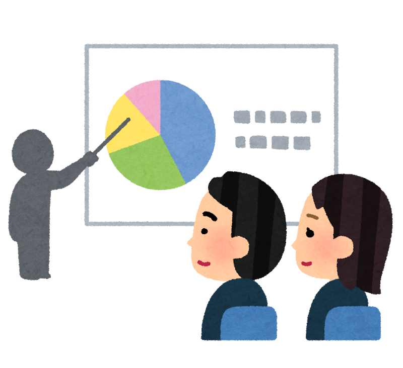

works
ポモドーロ・テクニック用ストップウォッチ
説明：「25分の作業＋5分の休憩」を1ポモドーロとし、 4ポモドーロごとに30分間の休憩をとることを繰り返す時間管理術として知られる、 ポモドーロ・テクニック用のストップウォッチをHTML5+CSS3、JavaScriptを用いて作りました。
便宜上のため、「5秒の作業→3秒の休憩」を4回繰り返した後に 20秒間の休憩を取れるよう設定しました。
おみくじゲーム
説明：ボタンを押すごとに「大吉」、「中吉」、「凶」が出るボタンをHTML、CSS3、JavaScriptを用いて作りました。 ちなみに凶を多めにしています。

スライドショー
説明：JavaScriptを用いて画像をスライドさせるものを作りました。 一定時間が経過すると自動的に画像が変わり、またクリックすることでも 画像を変えることができます。
